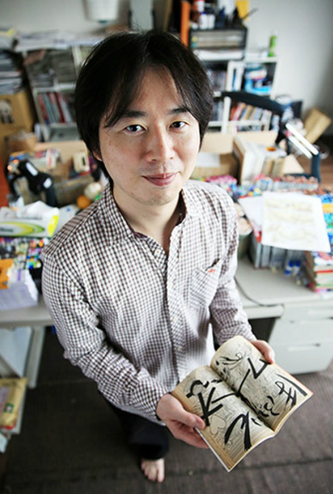

Artists
Masashi Kishimoto
Masashi Kishimoto (岸本 斉史 Kishimoto Masashi, born November 8, 1974) is a Japanese manga artist, well known for creating the manga series Naruto which was in serialization from 1999 to 2014. As of October 2015, Naruto manga has sold over 220 million copies worldwide. Besides the Naruto manga, Kishimoto also participated in the making of the anime films Road to Ninja: Naruto the Movie, The Last: Naruto the Movie, Boruto: Naruto the Movie, and has written several one-shot stories.
A reader of manga ever since a young age, Kishimoto showed a desire to write his own manga, citing authors Akira Toriyama and Katsuhiro Otomo as his main inspirations. As a result, Kishimoto spent several years working to write his own shōnen manga for Weekly Shōnen Jump magazine which he was a fan of.
Best creations
Takeshi Obata

Takeshi Obata (小畑 健 Obata Takeshi, born February 11, 1969) is a Japanese manga artist that usually works as the illustrator in collaboration with a writer. He first gained international attention for Hikaru no Go (1998–2003) with Yumi Hotta, but is better known for Death Note (2003–2006) and Bakuman. (2008–2012) with Tsugumi Ohba. Obata has mentored several well-known manga artists, including Nobuhiro Watsuki of Rurouni Kenshin fame, Black Cat creator Kentaro Yabuki, and Eyeshield 21 artist Yusuke Murata.
Takeshi Obata chose to be a manga artist because he always loved drawing. As a child he re-read Shotaro Ishinomori's Cyborg 009 over and over. He originally became noticed in 1985 when he took a prize in the Tezuka Award for his one shot 500 Kōnen no Shinwa. Joining the Weekly Shōnen Jump staff, he mentored under Makoto Niwano before starting his first major series, writing and drawing Cyborg Jii-chan G in 1989. After this series, Obata began collaborating with other writers.
Best creations
Eiichiro Oda
Eiichiro Oda (尾田 栄一郎 Oda Eiichirō, born January 1, 1975) is a Japanese manga artist, best known for his manga series One Piece (1997–present). With over 345 million copies in circulation worldwide, One Piece is the best-selling manga series of all time. The series' popularity resulted in him being named one of the manga artists that changed the history of manga.
Eiichiro Oda claimed that at age four he resolved to become a manga artist in order to avoid having to get a "real job". His biggest influence is Akira Toriyama and his series Dragon Ball. He recalls that his interest in pirates was probably sparked by the popular TV animation series titled Vicky the Viking. He submitted a character named Pandaman for Yudetamago's classic wrestling manga Kinnikuman. Pandaman was not only used in a chapter of the manga but would later return as a recurring cameo character in Oda's own works.
Best creations